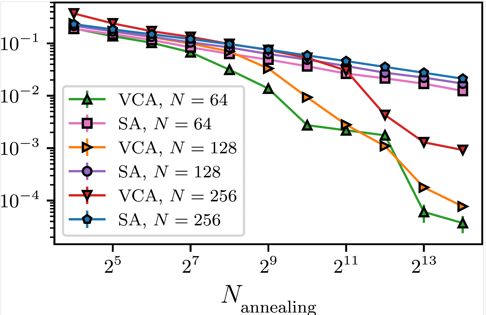
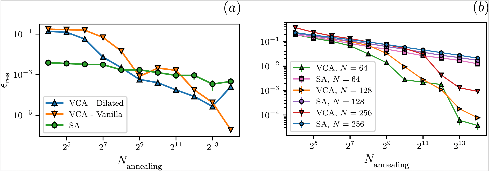

MACHINE LEARNING · OPTIMIZATION · PUBLISHED
Variational Classical Annealing with RNNs
Using autoregressive recurrent neural networks within a variational classical annealing framework to solve combinatorial optimization problems and compare performance against simulated annealing.
Research question
Can autoregressive recurrent neural networks, combined with annealing, provide a useful alternative to traditional simulated annealing for difficult combinatorial optimization tasks?
Approach
The work uses the Variational Classical Annealing (VCA) framework. Recurrent neural networks parameterize a probability distribution over candidate solutions and are optimized while the temperature is gradually reduced.
Architectures
Experiments include Vanilla RNNs and Dilated RNNs. The Dilated architecture uses skip-like recurrent connections to better represent longer-range interactions.

Experiments
VCA and simulated annealing were evaluated on three problem families: Maximum Cut, Nurse Scheduling and the Traveling Salesman Problem.



Key findings
- VCA achieved lower average error than simulated annealing in the slow-annealing regime across all three problems.
- The study reached Traveling Salesman Problem instances with up to 256 cities.
- For the best-case TSP solutions, VCA found the best tours across all three tested sizes and the exact ground state for N = 64.
- VCA required more compute time per iteration than simulated annealing, leaving room for future work on efficiency and transfer/meta-learning.
Publication
Supplementing recurrent neural networks with annealing to solve combinatorial optimization problems
Shoummo Ahsan Khandoker, Jawaril Munshad Abedin, Mohamed Hibat-Allah
Machine Learning: Science and Technology, 4 (2023) 015026.